This Month in Rust GameDev #33 - April 2022
Welcome to the 33rd issue of the Rust GameDev Workgroup's monthly newsletter. Rust is a systems language pursuing the trifecta: safety, concurrency, and speed. These goals are well-aligned with game development. We hope to build an inviting ecosystem for anyone wishing to use Rust in their development process! Want to get involved? Join the Rust GameDev working group!
You can follow the newsletter creation process by watching the coordination issues. Want something mentioned in the next newsletter? Send us a pull request. Feel free to send PRs about your own projects!
- Announcements
- Game Updates
- Engine Updates
- Learning Material Updates
- Tooling Updates
- Library Updates
- Other News
- Requests for Contribution
- Jobs
Announcements
Rust GameDev Meetup

The 15th Rust Gamedev Meetup took place in April. You can watch the recording of the meetup here on Youtube. The meetups take place on the second Saturday every month via the Rust Gamedev Discord server and are also streamed on Twitch. If you would like to show off what you've been working on at the next meetup on May 14th, fill out this form.
Rust Graphics Meetup 2
The 2nd Rust Graphics Meetup will take place on the 21st of May, at 16:00 UTC+0. This meetup is a chance to show off what you've been working on in the graphics community, or see what other people have been doing!
If you're interested in speaking, please fill out the form. You can also watch one of the talks from the first meetup.
RustConf Arcade Cabinet
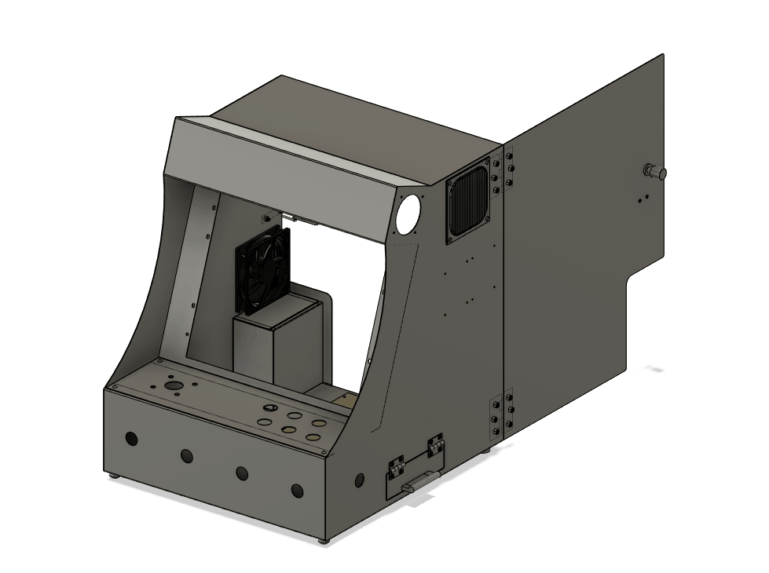
Carlo is building a custom arcade cabinet that will be at RustConf 2022 in Portland. It is an opportunity for Rust game developers to share their games with the broader community. If you are interested in getting your game on the cabinet, read this Twitter thread and fill out the interest form.
Game Updates
Way of Rhea
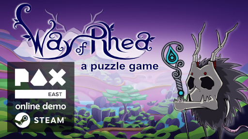
Way of Rhea is a puzzle adventure with hard puzzles and forgiving mechanics being produced by @masonremaley in a custom Rust engine. It has a demo available on Steam.
Way of Rhea was recently shown off at PAX East! A minor patch has been released to the demo with post-PAX fixes:
- An issue that made the last puzzle in the third forest level difficult to navigate with a controller was worked around
- Colliders in the Hermes puzzle were fixed (previously you could land on top of a gate if you held left while sliding)
- The attract mode that was used at PAX has been merged (not in demo)
- More jungle biome scenery has been placed (not in demo)
- A crash at startup on CPUs that don't support the
andninstruction was fixed (part of the BMI extension to x64) - The game can now generate mini dumps on Windows and Linux in the event that it crashes and if given consent, forward them to the developer for analysis
You can stay up to date with the latest Way of Rhea developments by following it on Steam, signing up for their mailing list, or joining their Discord.
BITGUN
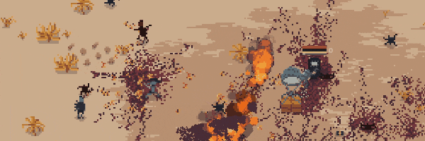 BITGUN gameplay
BITGUN (Discord, Twitter) by @darth and @shosanna is an action roguelite zombie shooter with difficult and satisfying combat you can learn and master. Guns break quickly and you lose all your gear when you die.
The game was just released on Steam! It has been developed by a programming duo called LogLog Games. They have been working on it for the past year and it is their biggest game so far (they also have 2 smaller games). BITGUN is written in Godot Engine but it is using Rust language extensively (it has around 7500 lines of Rust and 4200 lines of GDScript).
The main changes from the demo version of the game:
- New missions added with extra difficulty
- Improved AI which doesn't just chase the player but behaves unpredictably
- New zombie types - ranged zombie, big spider, zombie spawner
- Added comic-book style story
- Improved tutorial and new player experience
- Reworked inventory system with simplified armor
Discussion: /r/rust
Veloren
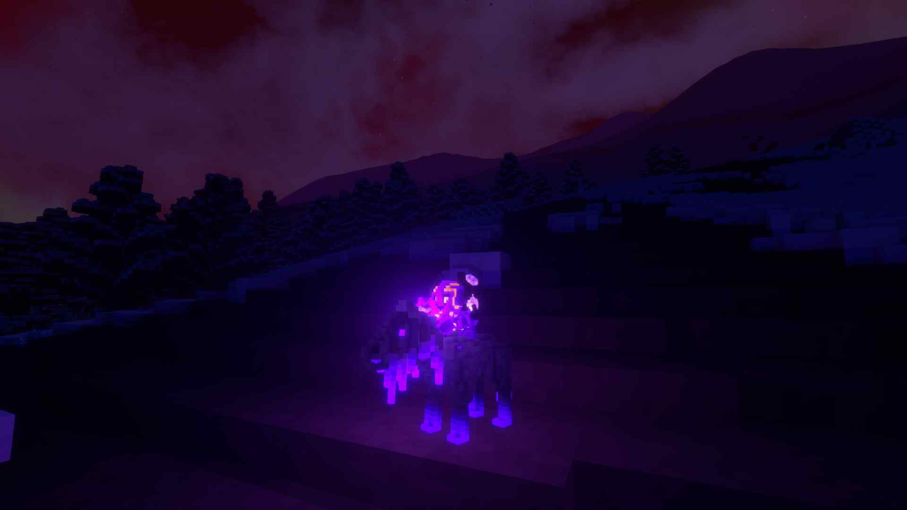 Out for a ride at night
Veloren is an open world, open-source voxel RPG inspired by Dwarf Fortress and Cube World.
For April Fool's day, Veloren made a post about a new direction; Need for Voxels: Veloren Cart. Enjoy the read! Veloren also participated in Reddit's /r/place, and got a small place right below /r/rust. Several months of project finances were processed, and discussed in a blog post. The Veloren Reading Club saw its 8th episode, which was on the topic of graphics and particles. A second Veloren Code Review session was held, in which two developers went through a merge request that focused on combat numbers.
Work was done to improve how loadouts work, specifically surrounding inheritance from other configs. Tweaks were made to arthropods, which should make them more fun to fight. Work is being done to prepare for the 0.13 release, with a custom map being built, and a special treasure map being created for the launch party. Player bank storages are being developed, which will allow players to store excess items in towns.
April's full weekly devlogs: "This Week In Veloren...": #166, #167, #168, #169.
Oasis of Lost Hope

Oasis of Lost Hope is a game where fertile ground is steadily consumed by dark, barren land called blight. Water helps defend an area from being consumed, but reserves are finite. The player needs to collect ore to build more irrigation towers and delay doom for a few more seconds. Yet one thing is certain: the days of fertile land are counted.
The game is an entry for the Ludum Dare 50 Jam, the theme of which was "Delay the Inevitable". It has been developed by setzer22 and Bromeon and open-sourced on GitHub. The game is built on top of godot-rust alongside GDScript. The Rust language is not exactly known for fast prototyping, but with a slightly less safety-conservative fork of godot-rust, the game jam experience was surprisingly smooth. When modeling mechanics such as the expanding blight or the water pipe network, Rust really showed its strength as a strongly typed and fast language.
Extremely Extreme Sports
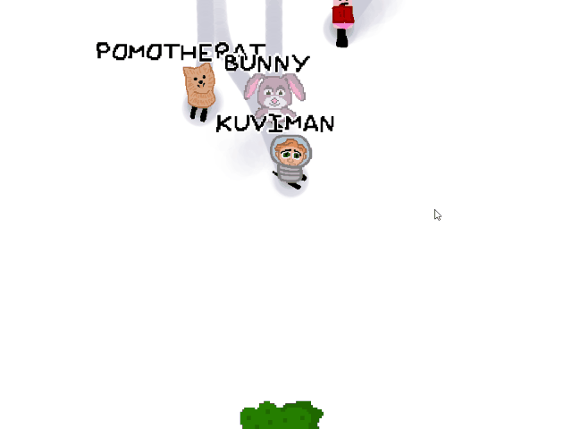
Extremely Extreme Sports (GitHub, Discord) is a multiplayer online downhill racing game made for Ludum Dare 50 game jam, scored top 3 in fun. Explode the mountain, and race against the avalanche as well as your friends.
Features:
- Online multiplayer
- Character customization
- Emoting
- A little bit of gameplay
Developed by @kuviman using custom engine. A postmortem blog post was written about the jam experience, and it includes postjam updates.
Discussions: /r/rust_gamedev
Engine Updates
Bevy v0.7
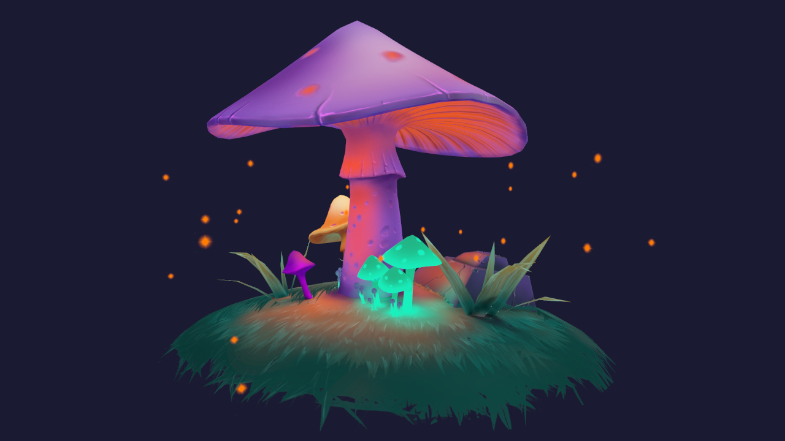 Creative Commons 'Stylized mushrooms' scene by QumoDone rendered in Bevy.
Bevy is a refreshingly simple data-driven game engine built in Rust. It is free and open source forever!
Bevy 0.7 was a massive community effort. You can check out the full release blog post here, but here are some highlights:
- Skeletal animation and mesh skinning
- GLTF animation importing
- Unlimited* point lights in a scene
- Improved clustered forward rendering: dynamic/adaptive clustering and faster, more accurate cluster assignment
- Compressed texture support (KTX2 / DDS / .basis): load more textures in a scene, faster
- Compute shader / pipeline specialization: Bevy's flexible shader system was ported to compute shaders, enabling hot-reloading, shader defs, and shader imports
- Render to texture: cameras can now be configured to render to a texture instead of a window
- Flexible mesh vertex layouts in shaders
- ECS improvements: Order systems using their names, Query::many_mut, use conflicting parameters in systems via ParamSets, WorldQuery derives
- Documentation improvements: better examples, more doc tests, and more coverage
- More audio control: pause, volume, speed, and looping
- Power usage options to enable only updating Bevy Apps when input occurs
Discussions: /r/rust, Hacker News, Twitter
Dims
 Foliage rendering in Dims
Foliage rendering in Dims
Dims is an open-world creation platform.
In their latest dev log they demonstrate a new foliage rendering and spawning system, which automatically spawns foliage and trees based on "habitat rules". This means a user can simply "paint" a world and it will get populated with plants and rocks automatically.
They are also planning to host a screenshot competition in the next few weeks for anyone who would like to try out the platform and create their own landscapes. Sign up for the newsletter on their website to get notified when it starts!
Discussions: Foliage rendering on reddit, Erosion tool on reddit
Eldiron
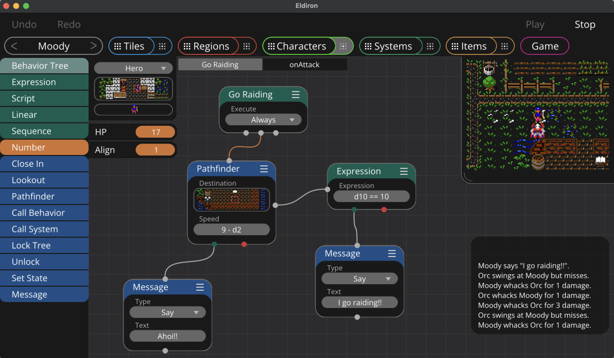 Behavior Nodes of Eldiron
Eldiron (GitHub, Discord, Twitter) by @markusmoenig is a creator for classic role playing games (RPGs) written in Rust.
Eldiron v0.5 features inbuild tilemaps, a node-based behavior system and region editors.
Development Updates in April:
- Support for 4 layers of tiles for game regions. This enables transparency and support for top-down and isometric views.
- Game regions can now contain named areas.
- Areas can contain behavior nodes to spawn monsters, lay traps, or displace tiles (for example to open a door).
- New "Systems" module to create behavior for Combat and soon for Crafting, Magic and more. System behavior trees can be called from any character.
Eldiron v1 will be able to create any kind of RPG utilizing square tiles, like the classical Ultima series.
Hotham
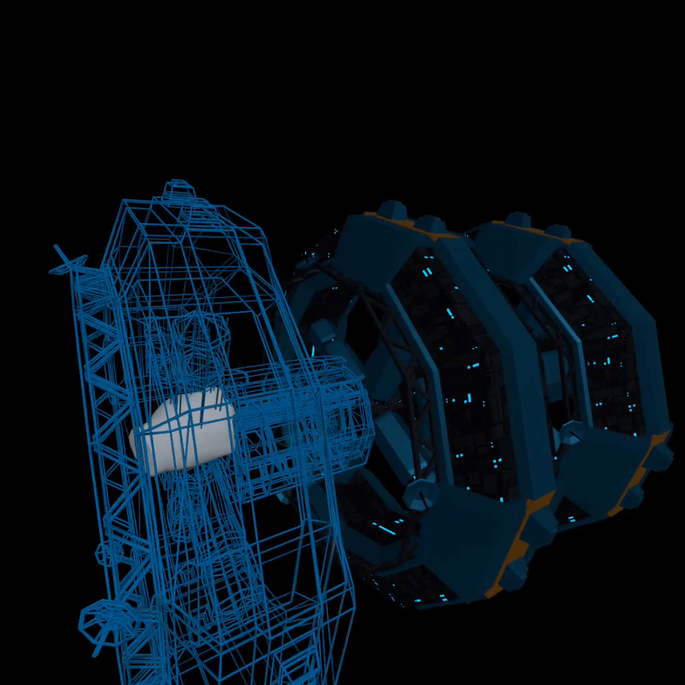 Screenshot from The Station, an upcoming space station simulation game, built with Hotham
Hotham is a game engine for standalone VR devices, trying to make VR development just a little bit less painful.
0.2 has been released with some breathtaking maintenance and performance improvements that make Hotham marginally easier to use. If you're interested in Rust and VR and haven't checked out the project already, now is an excellent time to do so.
A huge thank you to our sponsors and contributors (big hat-tip to @jmgao) and the wonderful members of the Hotham discord.
Learning Material Updates
Game Development with Rust and WebAssembly
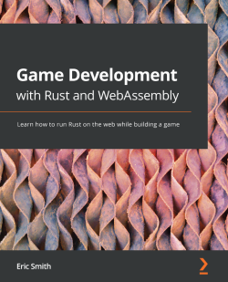
Game Development with Rust and WebAssembly by Eric Smith (a.k.a @paytonrules) was published in April. It takes a tutorial approach to lead the reader through building an endless runner using Rust and WebAssembly. You can play the completed game here.
From the summary: This book is an easy-to-follow reference to help you develop your own games, teaching you all about game development and how to create an endless runner from scratch. You'll begin by drawing simple graphics in the browser window, and then learn how to move the main character across the screen. You'll also create a game loop, a renderer, and more, all written entirely in Rust. After getting simple shapes onto the screen, you'll scale the challenge by adding sprites, sounds, and user input. As you advance, you'll discover how to implement a procedurally generated world. Finally, you'll learn how to keep your Rust code clean and organized so you can continue to implement new features and deploy your app on the web.
Why I choose to build my game from scratch
@HeavyRain266 published an article, 'Why I choose to build my game from scratch', a short story about their implementation of the game 'Forbidden Valley' from scratch in Rust. The author aims to show how much you can learn from building your dream game without the help of any game engine.
Discussions: r/rust_gamedev
Brontefy Me

@hedgein (Github, Twitch) started a devlog series called Brontefy Me. This series walks through the development of games in the Bevy engine. There are two episodes released so far. The first episode focuses on getting up and running with the engine, and the second episode starts expanding into game mechanics.
Tooling Updates
Vismut 0.5
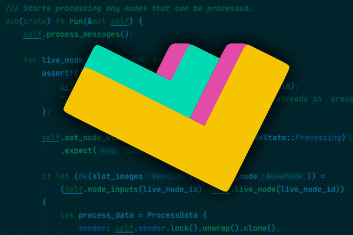
Vismut (GitLab, Zulip) by @lukors will be a procedural texturing tool.
Version 0.5 contains a brand new backend to create a better base for future improvements. A blog post describes the differences between the old and the new architecture.
Graphite
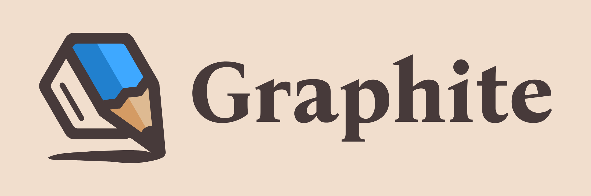
Graphite (website, GitHub, Discord, Twitter) is a free in-development raster and vector 2D graphics editor. It will be powered by a node graph compositing engine that supercharges your layer stack, providing a completely non-destructive editing experience.
The past month's Sprint 14 has focused on further editor features and UX improvements:
-
It's your type: The Text tool now provides over 1400 fonts with bold/italic styles from the Google Fonts library.
-
Oh snap!: A refactor and polish pass on the snapping system provides better clarity and consistency. And shapes now have outlines on hover and selection for easier targeting.
-
Have a dialog: Supported by a refactor that moved dialog layouts into the Rust backend, users can now create new documents of specified sizes and export artwork as PNG/JPG with new File menu dialogs.
-
Pack it up: The web component of the stack was finally upgraded to Webpack 5 which cleans up a mess of outdated dependencies.
Open the editor in your browser and give it a try.
Library Updates
Notan v0.3.0

Notan is a simple and portable layer designed to create your own multimedia apps on top of it without worrying about platform-specific code.
The main goal is to provide a set of APIs and tools that can be used to create your project in an ergonomic manner without enforcing any structure or pattern, always trying to stay out of your way. The idea is that you can use it as a foundation layer or backend for your next app, game engine, or game.
The latest version v0.3.0 comes with audio support for all platforms using as default backend oddio and symphonia.
Other News
- Other game updates:
- Last of the Sky Folk is a grapple-hook based platformer created for LD50.
- Heute Nicht rythm game is another LD50 submission.
- Other learning material updates
- PhaestusFox started a Bevy tutorial servies and 0.6 to 0.7 Migration Guide YouTube series.
- @TantanDev released a "Rust multi-threading code review" video.
- Other library updates:
- tween is an std-optional tweening library, designed for use in games and animations.
- cosync provides a single-threaded, sequential, parameterized async runtime.
- SuInput is an input system designed to give pancake and XR applications access to a huge range of input devices while minimizing the amount of complexity needed to support them.
- bevy_blender v0.2 with lots of new features is out.
Requests for Contribution
- Graphite is looking for contributors to help build the new node graph and 2D rendering systems.
- winit's "difficulty: easy" issues.
- Backroll-rs, a new networking library.
- Embark's open issues (embark.rs).
- wgpu's "help wanted" issues.
- luminance's "low hanging fruit" issues.
- ggez's "good first issue" issues.
- Veloren's "beginner" issues.
- Amethyst's "good first issue" issues.
- A/B Street's "good first issue" issues.
- Mun's "good first issue" issues.
- SIMple Mechanic's good first issues.
- Bevy's "good first issue" issues.
Jobs
- DIMS
(Stockholm/Remote)
- Tools Programmer
- Internship: Game Design
- Embark Studios
(Stockholm/Hybrid Remote)
- Various roles
That's all news for today, thanks for reading!
Want something mentioned in the next newsletter? Send us a pull request.
Also, subscribe to @rust_gamedev on Twitter or /r/rust_gamedev subreddit if you want to receive fresh news!